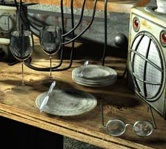

| 概要 | 地図 | |
| 淡いヒント集 | ヒント集 | 的確なヒント集 |
| 攻略最短ルート | Syberia 攻略へ |
| << 前の段階へ | 地域選択へ |
バロクシュタット
船と機関車
 ・船に機関車を移動してもらうにはどうしたらよいか? ・機関車を動かすには、船とつながなくてはいけない。それは、どうやったらよいか? ・鎖だけで、機関車とつなぐことはできるだろうか?
窓口
 ・分かりづらいが、ここは窓口である。過去の経験から、誰がいるか想像はつくだろう。 ・窓口では、何を要求しているだろうか? ・要求どおりにするにはどうしたらよいだろうか? ・窓口以外の場所も散策する必要がありそうだ。
国境を見張る軍人
 ・彼は何をしている人か? 彼にはどのような権利や義務、仕事があるのか? ・彼はどのような人間か? 正確や職業だけではなく、もっと別なことを知る必要がある。 ・彼は何か主張しているはずだ。その主張は事実か、それとも嘘か? 調べる必要がある。
机のうえのもの
 ・この机にはいろいろなものが乱雑に置かれている。重要なものはどれだろうか。 ・この机を見て、何か分かることがあるかもしれない。 ・この机のものを利用して、自分の課題を解決できるかもしれない。 ・時には手持ちの品をよく調べなくてはならないだろう。 |
| << 前の段階へ | 地域選択へ |
| 概要 | 地図 | |
| 淡いヒント集 | ヒント集 | 的確なヒント集 |
| 攻略最短ルート | Syberia 攻略へ |
Syberia
| 目次へ戻る | ページの上部へ |